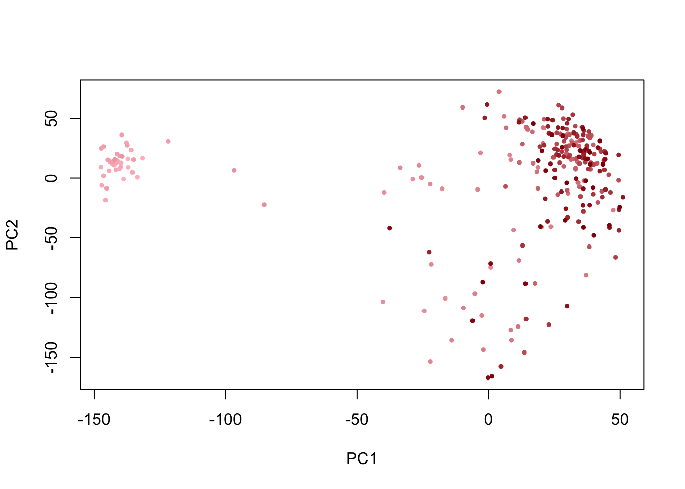
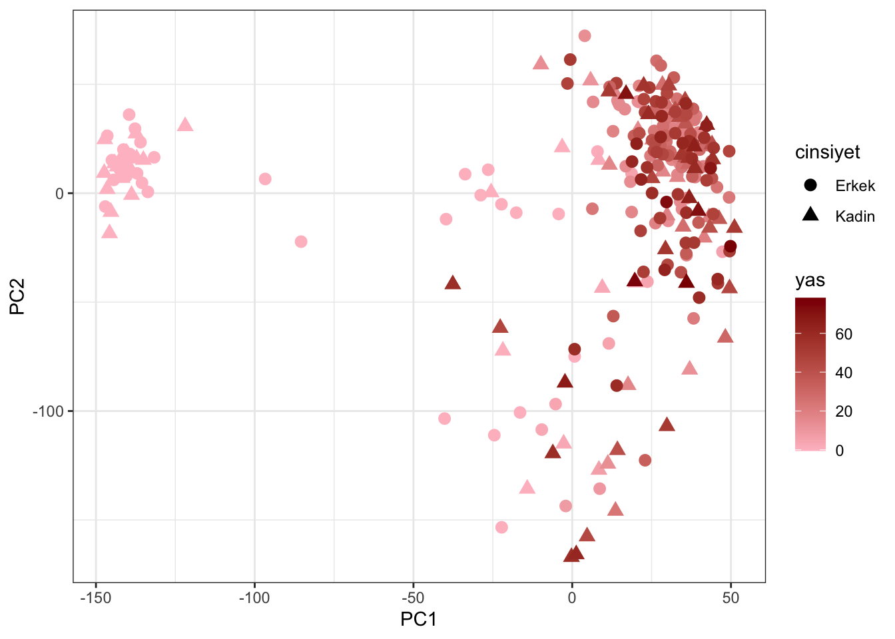

Bölüm 6 Temel bilesenler analizi
tba = prcomp(t(genexpr_qn), scale. = T)renkler = colorRampPalette(c('pink','darkred'))(length(yas))
renkler_sirali = renkler[rank(yas[rownames(tba$x)], ties.method = 'min')]
plot(x = tba$x[,1], y = tba$x[,2], pch = 19, cex = 0.5, col = renkler_sirali,
xlab = 'PC1', ylab = 'PC2')
Ayni figuru ggplot ile yapabiliriz. Ancak bunun icin bir kac tidyversede yer alan paketlerden bir kac fonksiyon kullanarak veriyi sekillendirmem gerekiyor:
library(tidyverse)## ── Attaching packages ─────────────────────────────────────── tidyverse 1.3.0 ──## ✓ tibble 3.0.6 ✓ dplyr 1.0.2
## ✓ tidyr 1.1.0 ✓ stringr 1.4.0
## ✓ readr 1.3.1 ✓ forcats 0.5.1
## ✓ purrr 0.3.4## ── Conflicts ────────────────────────────────────────── tidyverse_conflicts() ──
## x dplyr::filter() masks stats::filter()
## x dplyr::lag() masks stats::lag()pcadat = as.data.frame(tba$x[,1:2]) %>%
mutate(sample = rownames(tba$x)) %>%
mutate(yas = yas[sample],
cinsiyet = cinsiyet[sample])
head(pcadat)## PC1 PC2 sample yas cinsiyet
## 1 -138.7854 -0.7978871 GSM749899 -0.4986301 Kadin
## 2 -137.1751 15.9124596 GSM749900 -0.4986301 Kadin
## 3 -142.7689 13.8844269 GSM749901 -0.4986301 Erkek
## 4 -137.0419 9.0980053 GSM749902 -0.4986301 Erkek
## 5 -133.6389 0.6007799 GSM749903 -0.4794521 Erkek
## 6 -131.6583 16.4774424 GSM749904 -0.4794521 Erkekggplot(pcadat, aes(x = PC1, y = PC2, color = yas, shape = cinsiyet)) +
geom_point(size = 3) +
scale_color_gradient(low = 'pink', high = 'darkred') +
theme_bw()